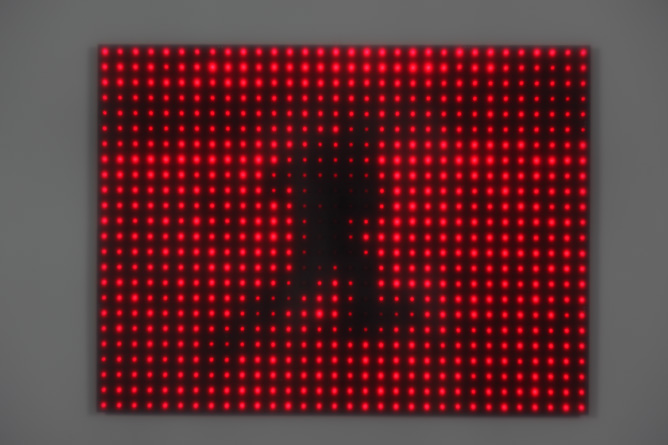

Robotic Arts Intro Fall 2017 (IA277.01)
- Instructor: Lucas Haroldsen (lharoldsen@mica.edu)
- Class Site: yasunaga.work/raif17
- syllabus: syllabus.pdf
- Resources: links.html
09/26: Expression --- [Analog output]

Review
- Analog input and serial monitor
- Serial Plotter
- Variable resistors and thresholds
- variables
- if statement and comparison operators
Today, we will explore:
- Fritzing: circuit drawing software
- Analog output
- Fading LED
- RGB LED
- Piezo element
- tone() function and pitches.h
- Map function
- random function
Tonight's Code
Tools
- Resistor color code calculator
- LED Series Resistor Calculator
- RGB color code chart
- Hex to RGB Conversion
Presentaton
Persistence Of Vision

Jim Campbell Running and Falling Series
Tweenbots by Kacie Kinzer
Double-Taker (Snout) by Golan Levin
Artist talk by Xu Bing: next week 4pm [optional]
Book from the Sky by Xu Bing
Xu Bing
Artist talk + visit with Bonnie Krafford: Next week 7pm sharp!

electronic harvesting day
Thomas Thwaites: How I build a toaster -- from scratch
e-waste locations
- First floor of Digital Print Center next to the computer lab. There are black shelves and blue bins for broken electronics
- Brown Building First floor on the way to Cafe Doris
- Bunting First Floor next to bulletin board
HOMEWORK
Project 1: the midterm
Project 1 is due October 24th. See the details on this link here. Spend this week experimenting with what you have learned so far in this class to think about possibilities for your project. Take some time to learn materials of your choice.
Make some sketches and notes of your ideas and your entry point into your project. Be prepared to talk about your project.
Electronic Harvest day is NEXT WEEK!
- Bring electronics you want to take apart
- Bring drawing materials of your choice
- Bring tools like screw drivers, pliers, hammers... whatever that helps you with the harvest